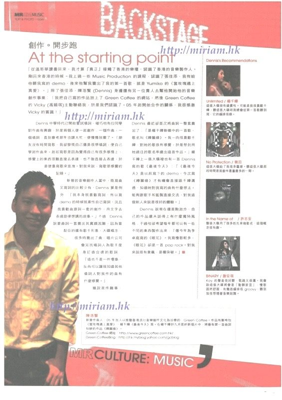
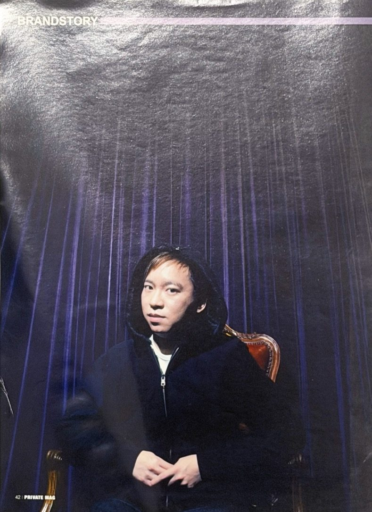
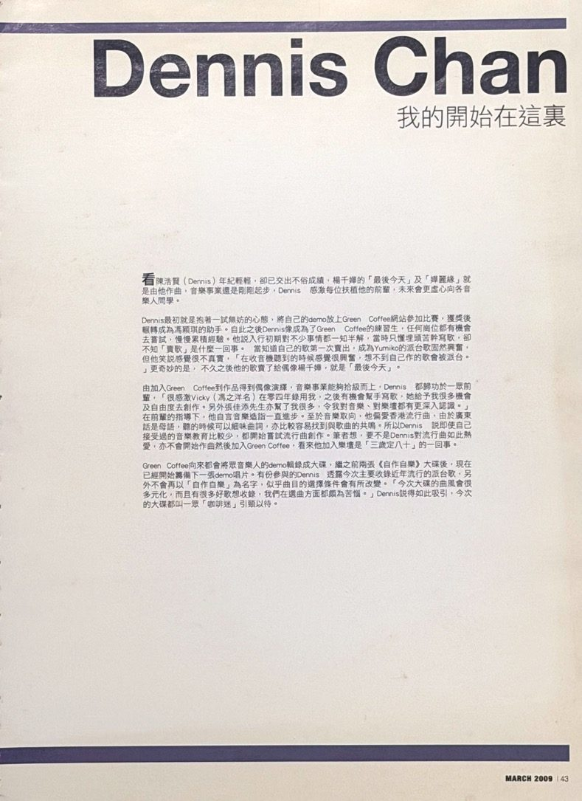

先排除不能承受的結果
結果未必完美，但不會失控。面對多個選項，先問「哪個問題現在不處理，影響會繼續擴大」，優先控制連鎖風險。
這個原則從 Backstage 處理演出現場開始，一直用到現在。
About Dennis
從溫哥華的多元文化，到香港的節奏，再到臺北的創意現場
我做決定有一個原則：沒有任何選項能保證最好。先把不能承受的結果逐一排除，再從可控的選項裡做決定。
我在加拿大 UBC 讀經濟，回到香港後成為 CASH 作家會員，替楊千嬅、周慧敏、鄭希怡等歌手作曲填詞。之後在 Backstage Live Restaurant 管過 400 多場演出，在 Frenzi Music 負責唱片發行與 A&R，也在服裝廠管過產線、在琴行管過門市。
2022 年搬到臺北，從雄獅旅行社的 KOL 商務，走到代表娛樂的遊戲 × 餐飲 × 平台聯名，再走進方成事的政府標案與影音專案。
行業換了幾次，做的其實是同一件事：理解需求、找到解法，把想法一路推到能交付、能驗收。我能和創作者談內容、和品牌談條件、和製作團隊談做法；需要時，文字、視覺與影音也能自己處理。
How I Work
我不只是提案，更讓提案成真
結果未必完美，但不會失控。面對多個選項，先問「哪個問題現在不處理，影響會繼續擴大」，優先控制連鎖風險。
這個原則從 Backstage 處理演出現場開始，一直用到現在。
接下專案先想好 Plan B、Plan C。遇到問題，把時程、成本與效果整理成可以比較的選項，而不是只把問題往上丟。
《永劫無間》聯名遇颱風，提出「維持成本」與「加少量預算趕工」兩案，活動沒有延期。
交付什麼、誰負責、權利歸誰、何時付款，事前寫清楚，不等出問題才回頭找條文。
《DEMO SAMPLER》約 18 首歌的詞曲權利分屬不同創作人與出版公司，逐一以英文合約處理授權。
一次性的工作，整理成下一次可以直接用的流程、模板和工具，讓團隊交接不必從頭來。
雄獅的 KOL Sales Kit、青苗琴行的管理模板、代表娛樂的 Uber Eats 合作公版。
Music
創作讓我習慣看細節，先弄懂對方站在什麼位置
2006 年起為 CASH 作家會員，作曲、填詞至今。2022 年來臺後經營個人 YouTube 頻道，自行拍攝與剪輯。



Selected Work
每一個專案，都是一次從靈感到實現的旅程
點地圖或清單打開專案摘要，再進到完整內頁，看我在裡面做了什麼、遇到什麼問題、怎麼判斷。團隊共同完成的部分，會標明我負責的範圍。
HELLO, DENNIS / WORKS
每個編號是一個專案依時間從香港排到臺北。點地圖上的編號或右側清單，看我在裡面做了什麼。THE PROJECT INDEX
Artists
合作過的歌手與音樂人
在歌曲創作、演出統籌、唱片宣傳與內容合作中共事過的歌手與音樂人，名單未逐一列盡。
Brands & Partners
合作過的品牌與廠商
在品牌聯名、提案與專案執行中共事過的品牌與單位，名單未逐一列盡。
Next Chapter
I am READY,期待與你們團隊共創下一段故事
dennischan.works@gmail.com